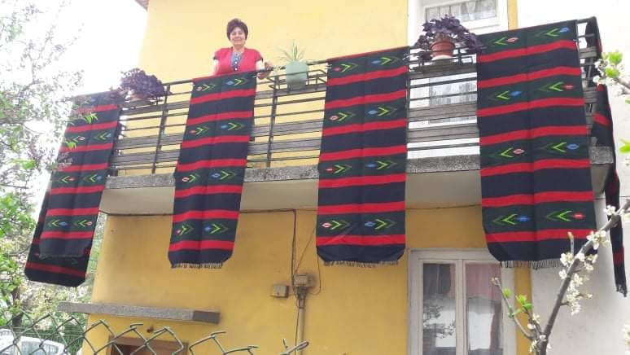

Баба Марта
На първи март отбелязваме една от най-хубавите български традиции – закичваме се с мартеници. Никой друг народ по света няма подобен обичай. Традицията гласи още, че щастие и късмет носи онази мартеница, която ти е подарена. Затова всички окичват на роднините и приятелите си мартеници.
Ето защо всяка година учениците от СУ „Св. св. Кирил и Методий“ окичват с мартеници дърво в двора на училището. С всяко възелче на мартеничка те пожелават на своите съученици, учители и родители живот, здраве, радост и късмет.


Трети март
Хоро се изви на площада в Якоруда за 3-ти март. Традиция е честването на Националния празник да е съвместно с жителите на града и гостите от цялата страна, пристигнали с теснолинейката Септември-Добринище.


Великден
По повод Възкресение Христово всяка година в центъра на града се организира празничен концерт. Във фоайето на читалището жителите и гостите на града могат да разгледат и изложба на великденски яйца и козунаци. На площада се вият кръшни хора.
Гергьовден
Това е една много вековна традиция в Якоруда при която няма младо и старо и разлика във вероизповедание. През последните години този ритуал се провежда и в центъра на града. В навечерието на Гергьовден в големи керамични гърнета се налива вода, всяко семейство носи китка здравец и цвете, завързани с червен конец –„ белег“. Китките се наричат за здраве и берекет. Преди изгрев слънце кюпа се отваря от най-възрастния човек. Част от водата се носи в къщи и се пръска за здраве от тавана до мазето. Наричат се всички най-хубави пожелания. Всички пеят и танцуват. Съдовете се поставят под трендафил или цъфнало цвете, за да пренощуват там на 5-ти срещу 6-ти май. На Гергьовден всеки взима своята китка.
Рамазан Байрам и Курбан Байрам
Със зурни, музика, борби на стадиона и кръшни хора на площада жителите на община Якоруда посрещат религиозните празници – Рамазан Байрам и Курбан Байрам. Празниците започват с традиционната празнична молитва за здраве и берекет. Музиканти тръгват по всички квартали, за да поканят хората на централния площад. Там се провежда дегустация на традиционните за Байрама сладкиши – баклава, халва, сладка баница и гъргалета. Пеят се местни фолклорни песни и се извива дълго хоро. По време на Байрама по-младите посещават по-възрастните, с което показват своето уважение. Курбан Байрам е свързан и с жертвоприношение.